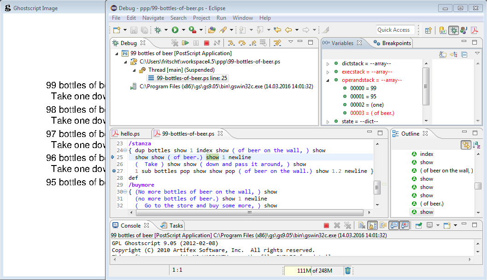
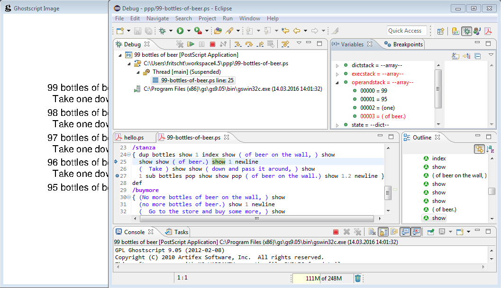

Welcome to PSDT
PSDT is a PostScript
IDE for Eclipse, including editor, debugger and documentation.


 



Editor
The PostScript editor (implemented using Xtext) has most features as expected from a state-of-the-art editor, like syntax coloring, outline view, code folding, content assist, auto-edit for brackets, marked syntax errors.
Debugger
The PSDT comes without a PostScript interpreter of its own. Instead, it interacts with Ghostscript installed on your machine.
The debugger (implemented using Nigel Hathaway's PostScript debugger) lets you step through your PostScript application, set breakpoints, inspect the stacks, and watch the rendered page image.
Documentation
Large parts of Adobe's PostScript Language Reference Manual are integrated into the Eclipse help contents.
Context-sensitive documentation is available from the PostScript editor, either as a tooltip (press F2) or in a separate browser view (press F3).
Installation
Drag this
button to your running Eclipse instance.
Alternative:
In Eclipse open menu Help -> Install New Software...
and use the update site
http://thomas-fritsch.github.io/psdt/repository/

Acknowledgements
- PS IDE/debugger by Nigel Hathaway
- The Launching Framework in Eclipse by Joe Szurszewski
- How to write an Eclipse debugger by Darin Wright and Bjorn Freeman-Benson
- An Xtext language built with Maven by Sven Efftinge, Dennis Huebner and others
- Eclipse User Help in your Xtext Hover by Andreas Mülder